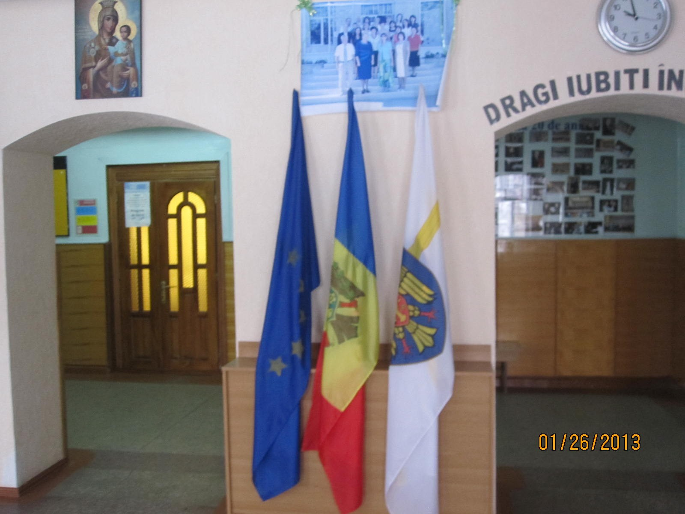
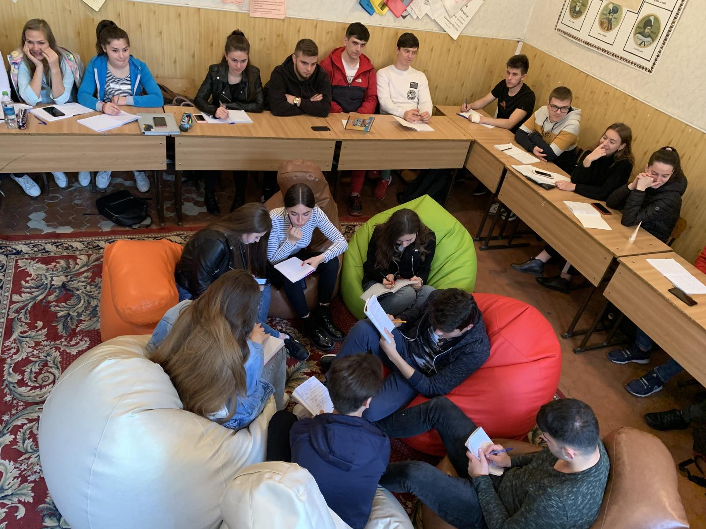
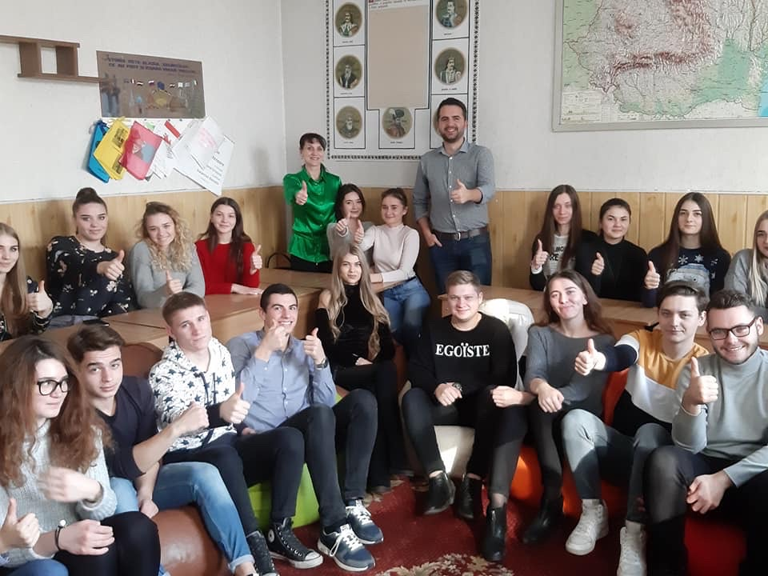

Noutăți
Modificări în orar
02/05/2022 În legătură cu faptul, că în liceul nostru procesul educațional decurge în conformitate cu Modulul III(elevii, începând cu clasa a XI-a pot alege doar anumite discipline pentru studiu, și pot fi grupe la careva discipline cu elevi din diferite clase) orarul va include unele repetări pentru ambele clase. Rugăm elevii să ia cunoștință de acest lucru și să numere câte ore vor fi incluse în orar pentru fiecare elev. În caz că apar întrebări, ne adresăm la diriginte ori la directorul adjunct.
Evaluarea tezelor
02/05/2022 În cadrul ședințelor desfășurate în cadrul fiecărei secții metodice au fost analizate și discutate testele elaborate de profesori. S-a ținut cont de faptul, ca testele să includă doar itemi ce țin de materia studiată în semestrul curent. De asemenea profesorii au elaborat matricea de specificație, baremul de corectare și baremul de notare. În legătură cu faptul, că în liceul nostru procesul educațional decurge în conformitate cu Modulul III(elevii, începând cu clasa a XI-a pot alege doar anumite discipline pentru studiu, și pot fi grupe la careva discipline cu elevi din diferite clase) orarul va include unele repetări pentru ambele clase. Rugăm elevii să ia cunoștință de acest lucru și să numere câte ore vor fi incluse în orar pentru fiecare elev. În caz că apar întrebări, ne adresăm la diriginte ori la directorul adjunct.
Analiza rezultatelor la teze
02/05/2022 În perioada 10-20 mai 2022 în clasele a X-a și a XI-a s-au desfășurat tezele semestriale, sesiunea de primăvară. au fost prezenți toți elevii, urmeaza consiliul profesoral cu ordinea de zi - analiza rezultatelor sesiunii. Directorul adjunct pe educație va face o analiza amplă, vor fi prezentate tabele, grafice cu dinamca reușitei, analiza comparativă pe clase.